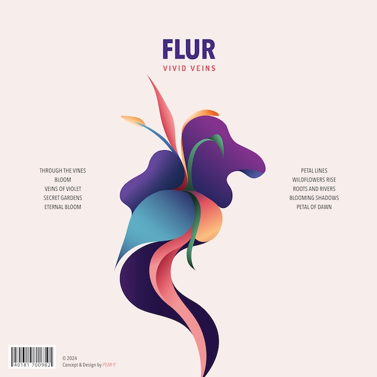
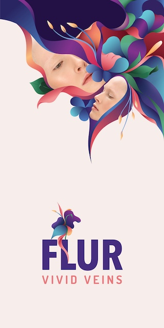
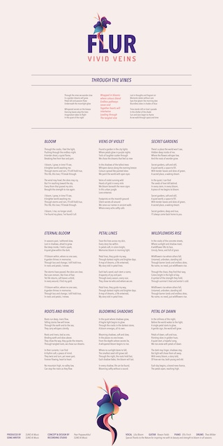
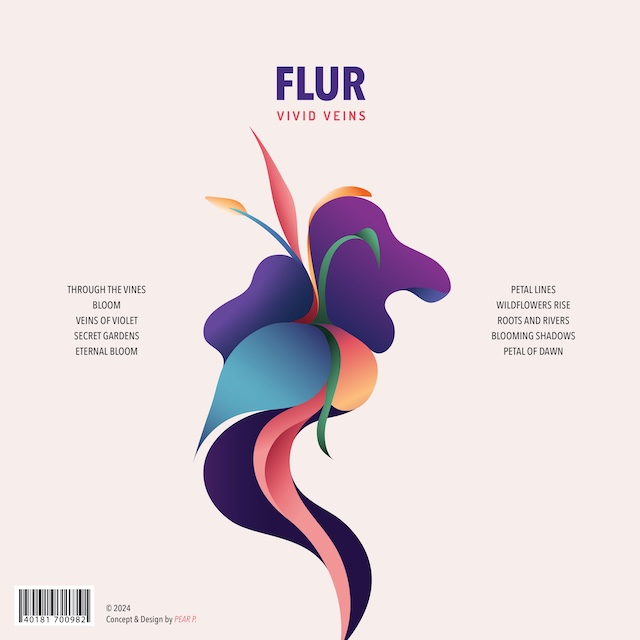
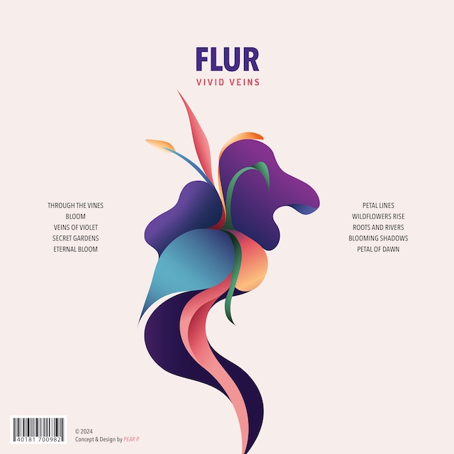

FLUR is the debut album by VIVID VEINS, an alternative pop band that blends emotional storytelling with vibrant, nature-inspired themes.
The album features ten tracks, each symbolizing growth, resilience, and self-discovery, using flowers as a recurring motif.
Tracks like "Through the Vines","Veins of Violet", and "Bloom" serve as the heart of the album, offering powerful narratives paired with dynamic soundscapes.
These songs explore themes of connection, creativity, and embracing change, delivering a deeply immersive listening experience.
The visual design of FLUR complements its themes, featuring the singer surrounded by intricately illustrated flowers in bold tones of dark blue, purple, and pink.
The harmonious intertwining of floral lines reflects the album's messages of unity and transformation.
Together, the music and visuals invite listeners on a journey of introspection, encouraging them to find strength and beauty within life’s challenges.
FLUR is a celebration of growth and the emotional complexity of the human experience.



THROUGH THE VINES
"..Wrapped in blooms where colours blend
Endless pathways never end
Together hearths will intertwine
Leading through the tangled vine.."
VEINS OF VIOLET
"..Veins of violet running wild
Hearts of gold in every mile
We bloom beneath the neon signs
In this urban jungle Love entwines.."
BLOOM
"..I bloom, I grow, in time I'll see,
But I'm reaching toward the sky.
Every thorn that grazed my skin,
This life, this love, I'll break through.."
SECRET GARDENS
"..Secret gardens, soft and still,
A quiet world, space to fill.
With tender leaves and skies of green,
A sacred place, a waking dream.."
ETERNAL BLOOMT
"..I'll bloom within, where no one sees,
A garden thrives in memories.
Through loss and change, I still hold true,
In roots and petals, I renew.."
PETAL LINES
"..Petal lines, they guide my way
Through darkest nights and brighter days
A map of dreams, a life entwined,
My story told in petal lines.."
WILDFLOWER RISE
"..Wildflowers rise where others fall,
Untamed, unbroken, standing tall
Through barren lands and endless skies,
No name, no need, just wildflowers rise.."
ROOTS AND RIVERS
"..Roots and rivers, tied as one,
Binding earth and skies above
They show the way, they guide the streams,
Through tangled roots, we chase our dreams.."
BLOOMING SHADOWS
"..Blooming shadows, soft and slow,
In the places no one knows.
From the depths where secrets lie,
A whispered bloom agains to rise.."
PETAL OF DAWN
"..In the stillness of the night,
Before the world wakes to the light,
A single petal starts to glow,
A gentle sign, the wotld will grow.."

 
